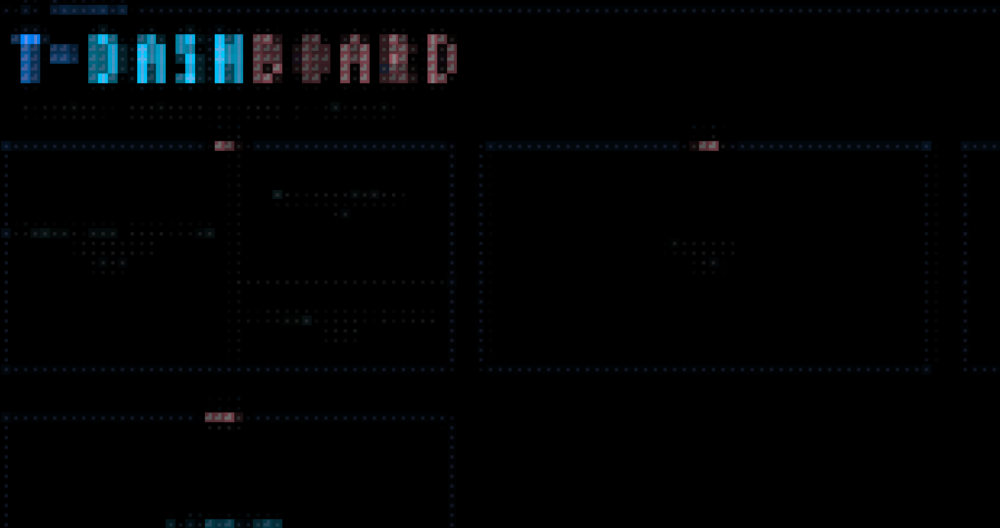

PROJECTS█
A collection of software projects I've built or contributed to. Each one represents a different challenge and learning experience, from full-stack web applications to developer tools and automation systems.

Gena
AI-powered voice collections system for Australian businesses. Natural-sounding calls and personalised emails with full regulatory compliance.
Visulus
B2B SaaS platform for asset lifecycle management. Warranty, compliance, and risk tracking with multi-tenant row-level security.

Jarvis
Personal context assistant running as an MCP server for Claude. Unified search across WhatsApp, iMessage, email, and Facebook with a React dashboard.

Tdash
Terminal dashboard for tmux with live system stats, ASCII-art window layouts, Claude Code session detection, and API usage tracking.